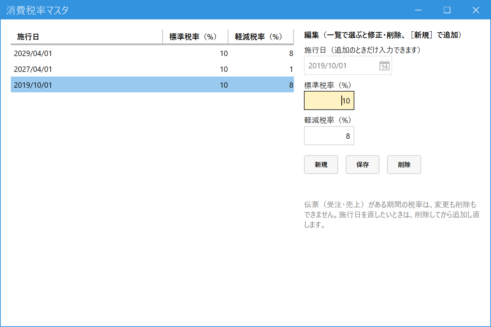

消費税率を登録する（管理者）
こんなときに使います
消費税率が変わるとき（税率改定など）に、新しい税率を登録します。登録した日（施行日）以降の伝票から、新しい税率が使われます。
消費税率が変わるとき（税率改定など）に、新しい税率を登録します。登録した日（施行日）以降の伝票から、新しい税率が使われます。
管理者専用の画面です。権限レベル9の社員にだけメニューに表示されます。
1.画面を開く
メインメニューの「システム設定」の中の「消費税率マスタ管理」を開きます。

- 税率の一覧：施行日の新しい順に、標準税率と軽減税率が並びます。
- 直したい行をクリックして選びます。右の「編集」に内容が出ます。
- 施行日：その日以降の伝票に、この税率が使われます。追加のときだけ入力できます。
- 標準税率（%）：たとえば「10」。
- 軽減税率（%）：たとえば「8」。
- 新規：新しい税率を追加するときに押します。
- 保存：押さないと反映されません。
- 削除：選んだ行を削除します。確認のメッセージが出ます。
2.新しい税率を追加する
- ［新規］を押します。
- 施行日・標準税率・軽減税率を入力します。
- ［保存］を押します。一覧に追加されます。
施行日は、新しい税率で計算したい最初の日を入れます。たとえば2029年4月1日から税率が変わるなら、施行日に「2029/04/01」を入れます。それより前の日付の伝票は、これまでの税率のままです。
3.税率を修正する・削除する
一覧で行を選ぶと、右の欄に内容が出ます。
- 修正：標準税率・軽減税率を直して［保存］を押します。
- 削除：［削除］を押し、確認のメッセージで「はい」を選びます。
- 施行日は変えられません。直したいときは、その行を削除して、正しい施行日で追加し直します。
伝票がある期間の税率は、変更も削除もできません。
その税率の期間に受注・売上の伝票が1件でもあると、修正も削除もできません。伝票のある期間の途中に入るような施行日を、新しく追加することもできません。
また、税率の一覧には最後の1件が必ず残ります。最後の1件は削除できません。
その税率の期間に受注・売上の伝票が1件でもあると、修正も削除もできません。伝票のある期間の途中に入るような施行日を、新しく追加することもできません。
また、税率の一覧には最後の1件が必ず残ります。最後の1件は削除できません。
登録済みの伝票・請求書・帳票の税率は、後から税率を登録しても変わりません。
保存・削除した内容は、すでに開いている受注入力・売上入力には反映されません。それぞれの画面を開き直してください。
保存・削除した内容は、すでに開いている受注入力・売上入力には反映されません。それぞれの画面を開き直してください。